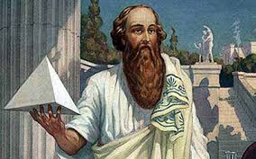
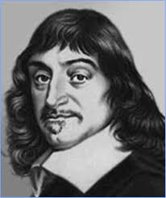
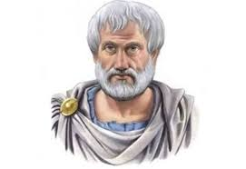

Matematika (grč. μαθηματική što znači učenje) je formalna i egzaktna nauka koja je nastala izučavanjem figura i računanjem s brojevima.[3][4] Iako ne postoji opšteprihvaćena definicija matematike, pod matematikom se u širem smislu podrazumeva da je ona nauka o količini (aritmetika), strukturi (algebra), prostoru (geometrija) i promeni (analiza).[5] Matematika je nauka koja izučava aksiomatski definisane apstraktne strukture koristeći logiku.[6] Izučavane strukture najčešće potiču iz drugih prirodnih nauka, najčešće fizike, ali neke od struktura su definisane i izučavane radi internih razloga.[7] Istorijski, matematika se razvila iz potrebe da se obavljanja proračuna u trgovini, vršenje merenja zemljišta i predviđanje astronomskih događaja. Ove tri početne primene matematike se mogu dovesti u vezu sa grubom podelom matematike na izučavanje strukture, prostora i promena.[8][9]
  